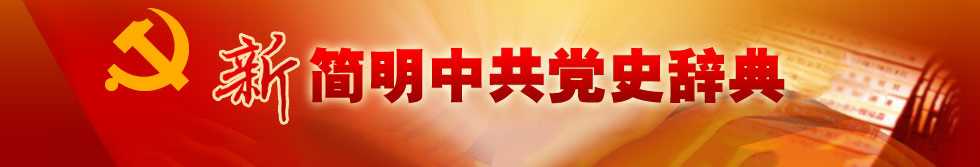

单页投屏
多页投屏

{{title}}
{{content}}
1921-1949
中共八大
反右
“大跃进”
庐山会议
四个现代化
“文化大革命”
中共九大
九一三事件
中共十大
天安门事件
中共十一大
平反冤假错案
拨乱反正
真理标准问题大讨论
中共十一届三中全会
1950—1978
整风运动
土地改革
抗美援朝
镇压反革命
批判《武训传》
西藏和平解放
“三反”“五反”
公审刘青山、张子善
第一次全国人民代表大会与第一部宪法
1979—1989
四项基本原则
《关于党内政治生活的若干准则》
《关于建国以来党的若干历史问题的决议》
中共十二大
废除领导干部职务终身制
中共十三大
1990—1999
邓小平南方谈话
中共十四大
社会主义市场经济体制
邓小平病逝
依法治国
中共十五大
1
2
3
4